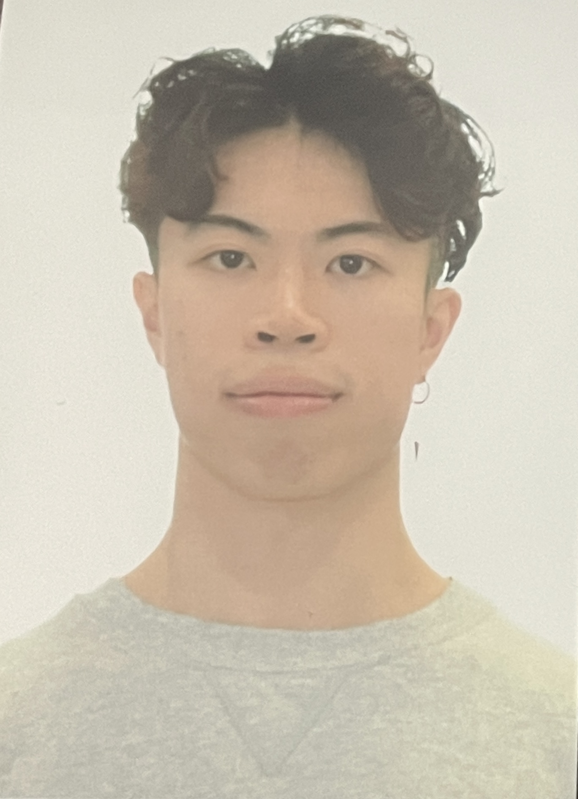

About me
Hey! I am a Canada-born-and-raised, software developer with a problem-solving mentality and forever on the lookout for the next challenge. Back when I was 6 years old, while playing Mario Bros on the Nintendo GameCube, I remember questioning how it was possible that I was moving my digital character with a physical controller.
I've forever asked the "why" and "how" whenever I've come across new technology. The questioning-like nature eventually led me into the world of coding, and I was instantly hooked! I genuinely enjoy the process of banging my head on my desk when my code won't work. The thrill of solving difficult problems drives me to be the best developer I can be.
I’m currently spending my time learning, experimenting, and building small projects to keep growing my skills. My goal is simply to become the kind of developer who solves real problems, and to have fun creating impactful products!
Hobbies
As much as I love to code, it can sometimes drain my mental energy and keep my body immobile for hours.
Fortunately, majority of my hobbies helps me stay physically active and helps my mind recharge when it feels worn out.
Hiking
Hiking is one of my favourite hobbies. I love the feeling of being surrounded by nature, breathing in the fresh air, and getting a good workout in. Sweating together with loved ones is the best!
Weightlifting
Strong body, strong mind! The challenge of pushing my body to its limits and seeing how much I can lift is a great way for me to relieve stress and stay in shape.
Badminton
Badminton is a sport I picked up in high school. The fast-paced nature brings out the competitive side of me!
Gaming
Although I code and game on the same computer, gaming is another great way for me to unwind and relax after a long day of coding.